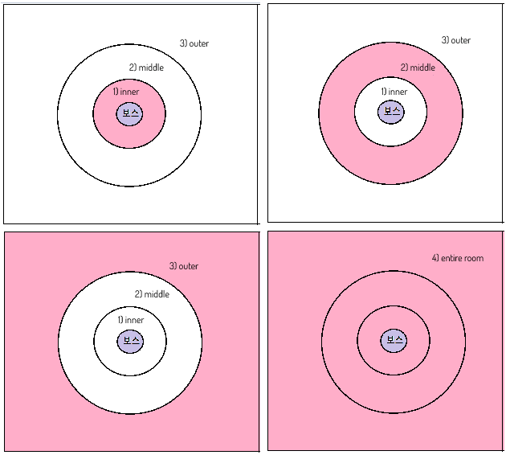

Luminous / Dungeons / Hall of Argon Queen
Curl
As soon as you aggro the boss, this is the first thing she will do. Get 19-20m away and stay away as it ticks multiple times and will kill you.
She can use this again whenever she wants, so be careful and always move out of the range.
Stun check
Likewise if anyone remains stunned, she will target them and do a curl.
| Getting hit by any of her abilities will apply a stack of this for 40 seconds. Reaching 5 stacks will trigger the poison and drain your hp within 1-2 seconds. Dont face her abilities ever. |
Tail Swipes
Now manaya has 2 different tail attacks depending on which shoulder she looks over. DPS generally stay on the side to avoid ever dealing with this.
Tail swipe over right shoulder:
Her tail will open up and rapidly stagger and apply poison stacks. Same like in old classic version.
Tail swipe over left shoulder:
She will swing her tail quickly, knocking you far away back if it doesnt instantly one shot you.
Small fly into puddles
Boss will lift off into the air briefly, moving towards aggro target and landing, stunning anyone hit. After she lands she will throw a puddle on every player with a bit of a delay.
As soon as you see her do the small fly up, get away in preparation for the puddles.
Lasers
These lasers are no longer blockable. They will always fire in a pattern of 3 -2 -3. You must either move out of the way completely or weave between them as a tank.
IN and OUT
Boss will do an outside AoE, followed by a inner AoE. This is entirely iframeable if needed to be. Knocks you down if youre hit.
Backstep into Frontal Blast
These attacks arent linked together strictly and can come entirely separate.
Turn into Blast
Usually triggers when the aggro target is on the side of the boss.
95% Stand Phase
Now when queen does the stand phase, there are 4 colors instead of the classic 3.
Debuff 4 (Entire Room) will trigger one second after 3 (Outer).
 |
Inner |
| Middle | |
| Outer | |
| Entire Room |
When she does this mechanic the first time, simply take your assignments; notice there is a message for it.
This mechanic will repeat again when the person with has about 20 seconds left on it.
Whenever anyones debuff has less than 30 seconds on it, start preparing for it.
● 4 people need to be assigned to each color and they must manage this mechanic for the entire fight.
For the first stand, each debuff is overwritten by the next one.
For example, the person who has (outer) NEEDS to dodge one second later to avoid taking (entire room)
It is mandatory to have all 4 debuffs present for the entire fight.
Once she goes below 90%, the boss will constantly check if all 4 debuffs exist and if they dont, she will instant wipe you and spam it until she fully resets. Dying at ANY point will remove your debuff, triggering the auto wipe.
You can stall her above 90% until you are recovered and have all 4 debuffs or are practicing.
Now there is more to it beyond the first stand:
Each time she stands she will say a message and auto change everyones debuff to a 10 second debuff of a different color.
I will Erase you!
When she says "Erase" you MUST look at the debuff she assigns you quickly and then take +1 whatever that is.
In this example the gunner gets changed to with a 10 second duration. Because it is ERASE, he must add +1 and take that to survive. (3) +1 = take (4)
I will Eradicate you!
When the boss says Eradicate, you now MUST -1 from your current debuff to survive.
Again the gunner is changed to . Because the boss said Eradicate the gunner must -1 to survive. (3) -1 = take (2)
Now this is where its tricky:
In this example the gunner is switched to and it is Eradicate(-1)
He takes properly, but then DOESNT iframe the 4th hit properly and his debuff is overwritten by
This leads to not having all 4 debuffs present and she auto wipes them.
It is direly important that people know how to iframe the 4th hit, ESPECIALLY the person with (1)
You cannot careless tank hits because the debuffs overwrite other debuffs.
being the hardest job because debuffs can be overwritten by +1 or -1, this only REALLY matters for anyone with because:
(1) -> can be overwritten with (2) or (4)
(2) -> can be overwritten with (1) or (3)
(3) -> can be overwritten with (2) or (4)
(4) -> can be overwritten with (1) or (3)
The short version is EVERYONE NEEDS TO IFRAME THE 4th HIT BESIDES THE PERSON NEEDED TO TAKE IT.
There is a Forced stand at certain % amounts starting at 70%, this can result in 2 stands back to back.

90% Auto wipe
If any debuff is not present - if any player dies, she will notice that and auto wipe the group until she fully resets.
80% Manahan Give me Power!
She will say a message and gain a purple buff, This means she will start range checking and reacting to ress baiting.
● Increases her base attack speed by 10%.
Range check:
The boss will pause and put a blue circle on someone further than 10-13m.
She will then burrow underground, appearing near the person and dropping a puddle on the target. When she initially drops this puddle it will fire 4 lasers and leave a puddle.
The lasers are entirely determined by where your character is facing. Easiest to look right at the boss or simply not move at all, dont laser other people.
The lasers come out in a cross shaped pattern based on your directional facing:
Here keep your eyes on the popo mystic, he doesnt move or turn at all just to be safe:
70% Shield - 2 minute cooldown
She gains 15 second shield that must be broken or she will auto wipe you.
Shield value: 576,000,000 and increases defense by 20% while active.
Big curl and Waves
The boss will say a message and curl, this time with your screen becoming darker.
An AoE will spawn around the boss, dealing ticking damage if you remain inside. Shortly after 2 waves will come from behind to the boss.
Iframe outsite of AoE:
You need to iframe both of these to survive. Requires 2 iframes.
Group up behind the boss and tank hold block for the ticking damage while everyone iframes both waves together.
Proper way how to do it:
50% Great ones blessing - 70 second cd
Same as the old shanra, but without the message appearing.
The ONLY indication is the boss gaining the red buff and shaking slightly.
Plague/regress so it never reaches 3 stacks otherwise she will berserk and one shot everyone with any attack.
10% Walk and Berserk
Under 10% the boss will walk away from the aggro target then gain the great ones blessing automatically.
● You need to kill her before she kills you at this point.
● If someone with a debuff dies, she will auto wipe.
● She also will one shot anyone with any attack at this point.
Around 11% you NEED to wait until she does a shield (2 minute cd) and then blow her the fuck up in the animation lock.
The lancer dies here but the healer and tank are taking the same debuff, saved this run.
Watch from here. Too long to clip:
After about 15:30 battle time, she will 'receive the energy of darkness' and go crazy.
- Damage is increased by 1000% and attack speed by 30% making it impossible to clear.
Some tips:
● You need to maintain all four debuffs, as the moment one is missing the boss kills everyone after 90%.-> 4 people who are in charge of debuffs are not allowed to die
● Bring many potions with you. Like Kelsaik, the debuff drains your HP periodically, and the boss's attacks HURT. Deals over 100k damage even if you do a perfect block, and crits happen like 40% of the time.
--- Healer can't take care of it all, so you need to be able to survive on your own
● When she curls down and roars, you can get inside safely once the red siminishes (1-2seconds)
● Left-Right Slam -> if the eyes flash red, iframe
● Front triple lasers can be iframed
● If you stand still on Range Check(Cross laser) you wont get hit
● Small fly into puddle -> avoid it if the boss is enraged. Will do 400k damage if crit happens so even if you perfect block you will die
● There's no point in trying to get to the front of the boss, as it literally jumps around randomly. Just get close and do damage so long as you don't get hit by attacks
● After 70% the boss will put up a shield, which is ridiculously big. So save your Adrenaline Rush for that.
● After 50% the boss will raise her head and look up to the sky, which applies a buff.
--- Healer must get rid of it. Remove it as soon as the buff stack turns into 2, and you should be fine.
● The boss gives you a bit of time after 10%, then goes berserk. So stop dpsing at about 11% hp, wait for the shield mechanic then burst her down to buy you some more time
● Once the boss goes berserk after 10% HP, avoid all attacks. Use Pledge of Protection for the debuff mechanic.
Sources
● Thank you to Tera Dungeons Guide Discord by Taldekk for details and footage● TERA Revived Shandra Manaya Lancer POV on Youtube
● TERA Revived Shandra Manaya Gunner POV on Youtube